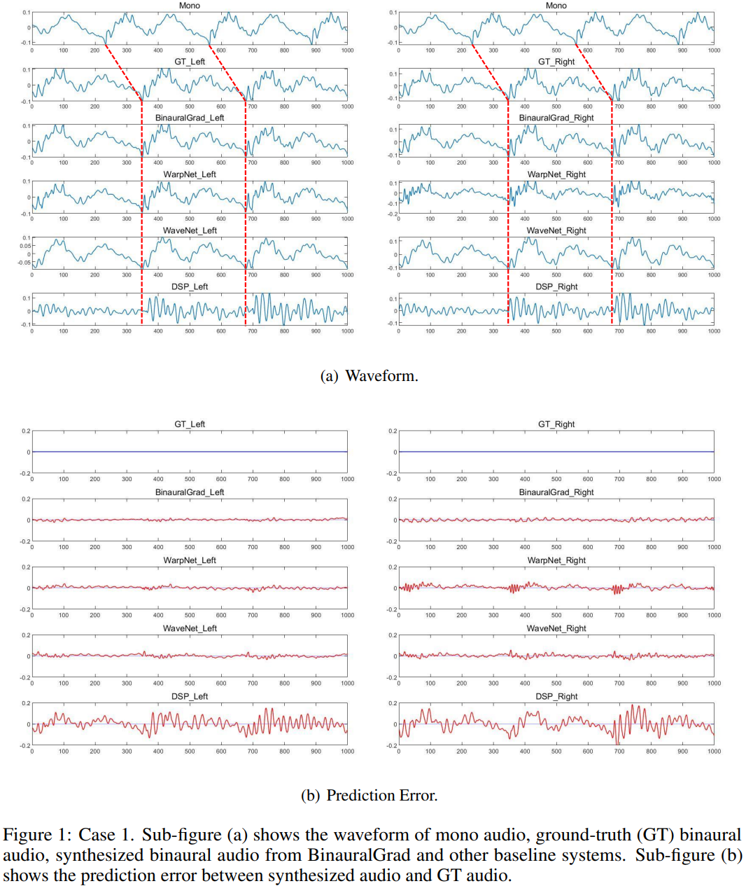
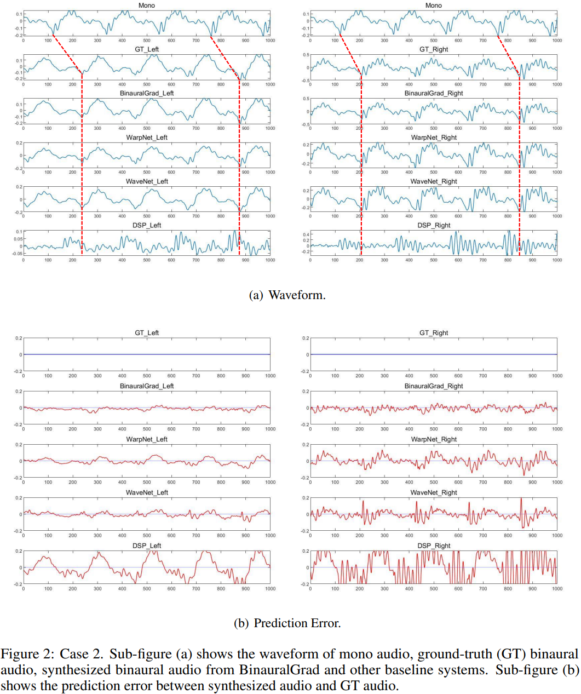
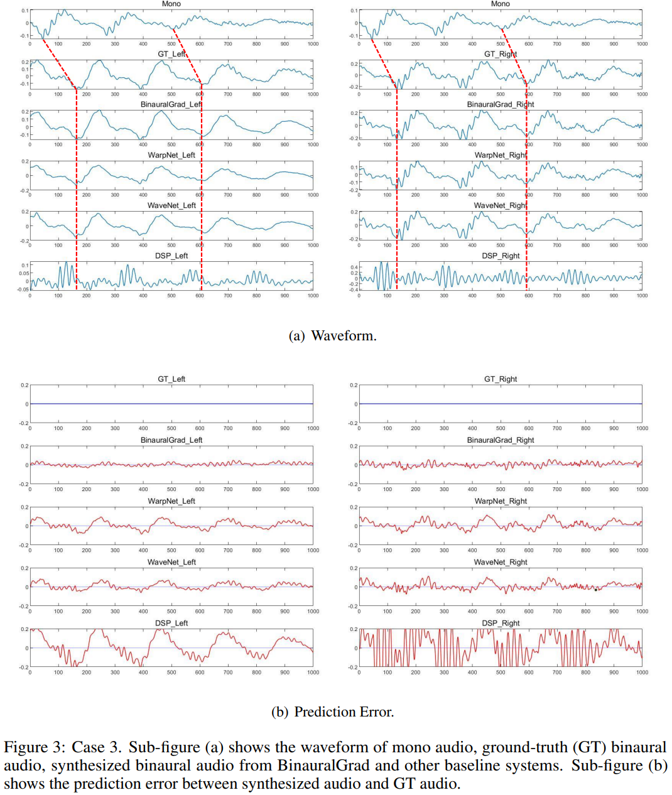

BinauralGrad: A Two-Stage Conditional Diffusion Probabilistic Model for Binaural Audio Synthesis
ArXiv: Comming soon
Authors
- Yichong Leng* (University of Science and Technology of China) lyc123go@mail.ustc.edu.cn
- Zehua Chen* (Imperial College London) zehua.chen18@imperial.ac.uk
- Junliang Guo (Microsoft Research) junliangguo@microsoft.com
- Haohe Liu (University of Surrey) hl01486@surrey.ac.uk
- Jiawei Chen (South China University of Technology) csjiaweichen@mail.scut.edu.cn
- Xu Tan^ (Microsoft Research Asia) xuta@microsoft.com
- Danilo Mandic (Imperial College London) d.mandic8@imperial.ac.uk
- Lei He (Microsoft Azure Speech) helei@microsoft.com
- Xiang-Yang Li (University of Science and Technology of China) xiangyangli@ustc.edu.cn
- Tao Qin (Microsoft Research Asia) taoqin@microsoft.com
- Sheng Zhao (Microsoft Azure Speech) szhao@microsoft.com
- Tie-Yan Liu (Microsoft Research Asia) tyliu@microsoft.com
* Equal contribution.
^ Corresponding author.
Abstract
Binaural audio plays a significant role in constructing immersive augmented and virtual realities. As it is expensive to record binaural audio from the real world, synthesizing them from mono audio has attracted increasing attention. This synthesis process involves not only the basic physical warping of the mono audio, but also room reverberations and head/ear related filtrations, which, however, are difficult to accurately simulate in traditional digital signal processing. In this paper, we formulate the synthesis process from a different perspective by decomposing the binaural audio into a common part that shared by the left and right channels as well as a specific part that differs in each channel. Accordingly, we propose BinauralGrad, a novel two-stage framework equipped with diffusion models to synthesize them respectively. Specifically, in the first stage, the common information of the binaural audio is generated with a single-channel diffusion model conditioned on the mono audio, based on which the binaural audio is generated by a two-channel diffusion model in the second stage. Combining this novel perspective of two-stage synthesis with advanced generative models (i.e., the diffusion models),the proposed BinauralGrad is able to generate accurate and high-fidelity binaural audio samples.Experiment results show that on a benchmark dataset, BinauralGrad outperforms the existing baselines by a large margin in terms of both object and subject evaluation metrics (Wave L2: 0.128 vs. 0.157, MOS: 3.80 vs. 3.61).
Demo Video
The below video is used to show the comparison of our BinauralGrad with recording, WarpNet baseline, WaveNet baseline, Digital Signal Processing (DSP) baseline, which can be downloaded in here if there is problem in online watching.
Note the we show the binaural audio from recording, BinauralGrad and baseline systems in one demo video with montage. If you are interested in the corresponding video with a system sololy, you can download it in Recording, BinauralGrad, WarpNet, WaveNet, DSP.
Audio Samples
The following part is 5 audio samples, each of which consists of 5 audio from recording, BinauralGrad (Our method), WarpNet baseline, WaveNet baseline, Digital Signal Processing (DSP) baseline.
Sample 1.
| Recording | BinauralGrad | WarpNet | WaveNet | DSP |
|---|---|---|---|---|
Sample 2.
| Recording | BinauralGrad | WarpNet | WaveNet | DSP |
|---|---|---|---|---|
Sample 3.
| Recording | BinauralGrad | WarpNet | WaveNet | DSP |
|---|---|---|---|---|
Sample 4.
| Recording | BinauralGrad | WarpNet | WaveNet | DSP |
|---|---|---|---|---|
Sample 5.
| Recording | BinauralGrad | WarpNet | WaveNet | DSP |
|---|---|---|---|---|
Case Study
We randomly select three cases from the test set to intuitively compare the proposed BinauralGrad with other baselines. For each sample we plot 2 sub-figures, each with N=1000 sampling points in a sampling rate of 48kHz, and the time length of each sample is around 0.021s.
One sub-figure (e.g., Figure 1(a), 2(a), 3(a)) shows the waveform of the mono audio, the ground-truth (GT) binaural audio and the generated binaural audio with amplitude information, in which we can visually check the time delay with the red dashed lines, and we can also compare the difference between different models. Another sub-figure (e.g., Figure 1(b), 2(b), 3(b)) shows the prediction error between generated audio and GT audio. The blue lines show the GT results, while the red lines represent the prediction error at each sampling point. The prediction error of each model is shown in the same range [-0.2, 0.2].
For these three cases, as shown in Figure 1, Figure 2 and Figure 3, we can find that BinauralGrad precisely predicts the GT waveform in both left ear audio and right ear audio. In most situations, the prediction error is close to Gaussian noise. As a comparison, WarpNet sometimes adds small artifacts on the waveform. And the prediction is not stable for binaural audios. As it can be seen in Figure 1, the prediction error of left ear audio is small, but the extra artifacts are especially apparent in the right ear audio when N in [0, 100], [350, 450], [670, 770]. Moreover, in both Figure 2 and Figure 3, we can see obvious prediction error which even shows similarity with GT waveform in both left and right ear. For WaveNet, it may fail to accurately predict the GT waveform, which can be seen from Figure 1 and Figure 3. For DSP, the estimation results are not as good as other models either in the time delay or the amplitude prediction.
 To sum up, in our test experiments, we find that our proposed BinauralGrad is advantageous in binaural audio waveform reconstruction. Compared to other models, the prediction error of our model is smaller. Especially, our results are more stable. Sometimes, other models can achieve small prediction error in one ear, but they fail to accurately model the waveform of the other ear. BinauralGrad can simultaneously achieve accurate predictions in both left ear and right ear.
For other models, WarpNet sometimes adds extra artifacts on waveforms, which may be caused by their multiple methods to strengthen the phase estimation. And its prediction error is large in some time periods. WaveNet may fail to predict fine-grained details of GT waveforms because it only uses position as (a weak) condition information but not uses warping (proposed in WarpNet). DSP estimation results, where a generic (not-personalized) HRTF (head-related transfer functions) and RIR (room impulse response) is used since the dataset does not contains HRTF and RIR, are not as good as other models and its prediction error is usually much larger than other results.
Our Related Works
Some speech research conducted at Microsoft Research Asia
NaturalSpeech: End-to-End Text to Speech Synthesis with Human-Level Quality
FastSpeech: Fast, Robust and Controllable Text to Speech
FastSpeech 2: Fast and High-Quality End-to-End Text-to-Speech
AdaSpeech: Adaptive Text to Speech for Custom Voice
AdaSpeech 2: Adaptive Text to Speech with Untranscribed Data
AdaSpeech 3: Adaptive Text to Speech for Spontaneous Style
AdaSpeech 4: Adaptive Text to Speech in Zero-Shot Scenarios
PriorGrad: Improving Conditional Denoising Diffusion Models with Data-Dependent Adaptive Prior